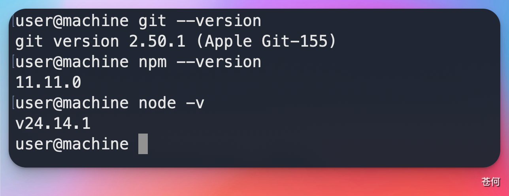
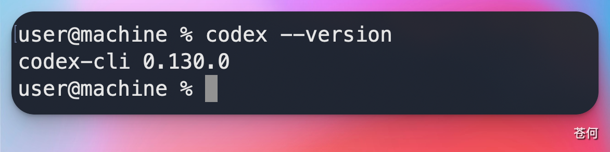
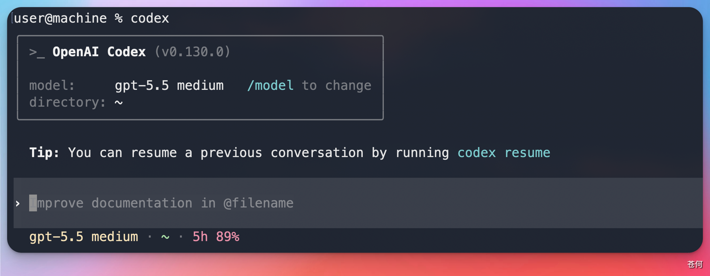
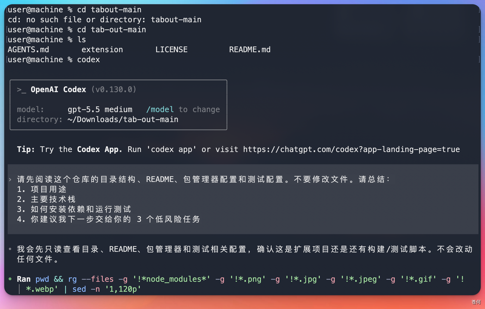

12 CLI 与 IDE
安装与登录
本页先覆盖 Codex CLI 的安装与登录。桌面端、ChatGPT、Cloud 和 IDE 入口会在 入口地图 中分别展开。
本站同步：本节已同步为站内教程，可直接阅读；账号、套餐、权限和界面以实际显示为准。
来源：CodexGuide 原文。原页面标注 MIT Licensed；原图与说明按页面内容保留。
安装与登录
本页先覆盖 Codex CLI 的安装与登录。桌面端、ChatGPT、Cloud 和 IDE 入口会在 入口地图 中分别展开。
💡 最后核对 官方资料最后核对日期：2026-05-27。CLI 系统要求与安装方式参考 openai/codex 官方仓库、CLI install 文档 和 Codex CLI Help Center。
安装前检查
官方仓库当前给出的 CLI 运行环境建议：
| 项目 | 建议 |
|---|---|
| 操作系统 | macOS 12+、Ubuntu 20.04+/Debian 10+、Windows 11 通过 WSL2 |
| Git | 推荐 2.23+，便于 PR 辅助能力 |
| 内存 | 4GB 起步，8GB 更稳 |
本地先确认：
node -v
npm -v
git --version

安装 CLI
常见安装方式：
npm install -g @openai/codex
更新到最新版本：
npm install -g @openai/codex@latest
检查版本：
codex --version

登录方式
运行：
codex
根据终端提示完成登录。官方资料说明 Codex 可以通过 ChatGPT 账号在多个入口中使用，具体可用计划、限额和组织策略以 Codex in ChatGPT Help Center 为准。

第一次只读任务
进入一个本地项目根目录：
cd path/to/your/project
codex
先让 Codex 只读仓库：
请先阅读这个仓库的目录结构、README、包管理器配置和测试配置。不要修改文件。请总结：
1. 项目用途
2. 主要技术栈
3. 如何安装依赖和运行测试
4. 你建议我下一步交给你的 3 个低风险任务

安装失败时怎么判断
| 现象 | 可能原因 | 处理方式 |
|---|---|---|
codex 命令找不到 |
npm global bin 未进 PATH | 查看 npm bin -g，把目录加入 shell PATH |
| 登录后仍提示无权限 | 账号计划、组织策略或会话状态问题 | 重新登录，并查看 Help Center 中的计划说明 |
| Windows 运行异常 | 未使用 WSL2 或 shell 环境不完整 | 按官方建议使用 Windows 11 + WSL2 |
| 仓库命令跑不起来 | 项目依赖未安装或本地环境缺失 | 先安装项目依赖，再让 Codex 读取测试配置 |
完成后继续：第一次让 Codex 改代码。